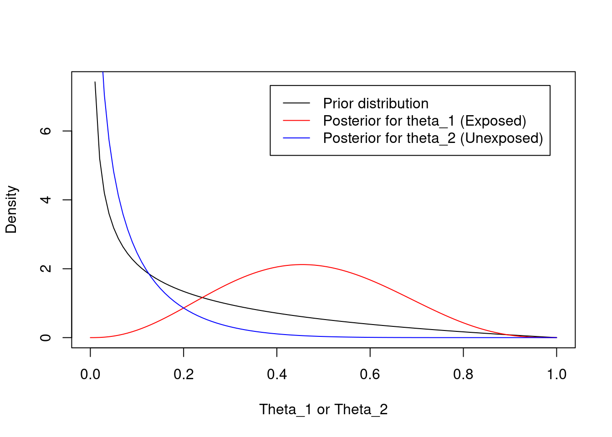

Do teenagers learn math more quickly using the Singapore Method?
Will people with heart disease live longer if they are prescribed medication X?
Teenagers and people with heart disease, are the populations of interest. However, it is rare that we can ever study the entire population
The purpose of inferential statistics is to make valid inference about a populations based on a sample from that population
We commonly make inference about population parameters
2 Inference and variability
With biological questions, there is inevitably variation in the response across repetitions of the experiment
Exposure to a carcinogen increases your risk of cancer, but does not guarantee a cancer will develop
Thus, biological questions must be phrased in a probabilistic (not deterministic) language
Deterministic: Does medication decrease blood pressure?
Probabilistic: Does medication tend to decrease blood pressure?
The wording “tends to” is intentionally vague. There are many possible definitions
A lower average value (arithmetic mean)
A lower geometric mean (arithmetic mean on log scale)
A lower median
Median(Trt) - Median(Ctrl) \(<\) 0.0
Median(Trt - Ctrl) \(<\) 0.0
A lower proportion exceeding some threshold
A lower odds of exceeding some threshold
Pr(Trt \(>\) Control) \(<\) 0.5
And many others...
Defining “tends to” is primarily dictated by scientific considerations
You, not the data, get to choose which summary measure you care about
Which measure is most important to advance science?
In this course, we will describe the most common models for modeling means (linear regression), odds (logistic regression), hazards (Cox proportional hazards regression), and rates (Poisson or negative binomial regression). Other modeling choices could be used to answer different scientific questions.
3 Scientific versus statistical questions
To formally answer scientific questions, they must be refined into statistical questions
Scientific question: Does aspirin prevent heart attacks?
An important question, but can’t be addressed by statistics
Cause and effect dependent on study design
Refinement 1: Do people who take aspirin not have heart attacks?
This is problematic because it is deterministic. Some people will have heart attacks even if they take aspirin because there is variability across subjects.
Refinement 2: Do people who take aspirin tend to have fewer heart attacks?
This refinement acknowledges variablity in response across subjects, but lacks a control group. We would need to know how many heart attacks they would have otherwise
Final refinement: Is the incidence of heart attacks less in people who take aspirin than those who do not?
Basic science: Is the incidence less by any amount?
Clinical science: Is the incidence less by a clinically relevant amount?
Note that we are addressing statistical association, not causation
4 Associations between variables
An association exists between two variables if their probability distributions are not independent
For random variables \(X\) and \(Y\) with joint probabilty density function (pdf) \(f(x,y)\), marginal pdfs \(f_X(x)\) and \(f_Y(y)\), and conditional pdfs \(f(x | y)\) and \(f(y | x)\)
Independence means that there is no way that information about one variable could ever give any information at all about the probability that the other variable might take on a particular value
Association means that the distribution of one variable differs in some way (e.g. mean, median, variance, probability of being greater than 10) across at least two groups differing in their values of the other variable
Can we ever establish independence between two variables?
Yes, but it is very difficult
Two variables can be associated in many different ways. It is hard to examine every characteristic of a distribution across groups
Conversely, we can show associations as soon as we establish some information that one variable provides about the other
Negative studies (e.g. studies with p \(>\) 0.05 or CI that contains the null value)
Absence of evidence is not the same as evidence of absence
To make negative studies meaningful, we must...
Specify the type of association that we are looking for (e.g. mean, median)
Quantify the amount of uncertainty that might differ across groups
4.1 Example: Inference about an association between exposure (E) and disease (D)
5 Exposed (E+) and 5 Unexposed (E-) subjects were followed for one year, and the number of subjects with and without disease are summarized in the following table
The number of E+ and E- were fixed by design (5 each). The random variables are the number of subjects (out of 5) who are D+.
The scientific question of interest there an association between exposure and increased (or decreased) risk of disease?
Our analysis plan should take into account the fact that we have a samll sample size. For illustration, I will consider both a Bayesian and frequentist approach so the methods can be compared.
4.1.1 Frequentist analysis
Results from the unconditional exact test are provided below. The binomial model assumes that the row or columns margins are fixed, which corresponds to the study design. 1
1 A multinomial model would assume the total sample size is fixed, which is a common design but not appropriate here. Fisher’s exact test assumes that both the row and columns margins are fixed, which is rarely found in practice.
Z-pooled Exact Test
data: 3 out of 5 vs. 0 out of 5
test statistic = 2.0702, first sample size = 5, second sample size = 5,
p-value = 0.06185
alternative hypothesis: true difference in proportion is not equal to 0
95 percent confidence interval:
-4.551214e-05 9.235547e-01
sample estimates:
difference in proportion
0.6
How would you summarize the results of the study examining the association between E and D? Critique the following
Answer 1: Since the p-value is greater than 0.05, we conclude that there is no association between exposure E and disease D.
Answer 2: Since the p-value is greater than 0.05, we lack evidence to conclude that there is an association between exposure E and disease D.
Answer 3: We observed incidence rates of 60% in the exposed (95% CI: [15%, 95%]) and 0% in the unexposed (95% CI: [0%, 52%]). The precision of the study was not adequate to demonstrate that such a large difference in incidence rates would be unlikely in the absence of a true association.
4.1.2 Bayesian approach to 2x2 table analysis
A Bayesian analysis requires specifying appropriate prior distributions for our parameter. Let \(\theta_1 = \textrm{Pr(D+|E+)}\), \(\theta_2 = \textrm{Pr(D+|E-)}\), and \(\theta = \theta_1 - \theta_2\).
We also have to specify the likelihood the number of subjects (out of 5) who are diseased in the Exposed group and the number of subjects who are diseased in the Unexposed group. Note that this is the same binomial likelihood that is assumed in the frequentist approach above.
For the prior distributions, we choose \(a_1 = a_2 = 0.5\) and \(b_1 = b_2 = 2\). That is, the prior parameters are the same for \(\theta_1\) and \(\theta_2\) with prior mean 0.20.2
The prior and posterior distributions for \(\theta_1\) and \(\theta_2\) are summarized below
The distribution for the Exposed is shifted to the right (relative to the prior) because 3/5 subjects were D+
The distribution for the Unexposed is shifted to the left (relative to the prior) because 0/5 subjects were D+
2 Mean of Beta(a,b) is a/(a+b)
Code
# Prior parametersa <- .5b <-2a/(a+b)
[1] 0.2
Code
plot(function(x) dbeta(x,a,b), xlab="Theta_1 or Theta_2", ylab="Density")plot(function(x) dbeta(x,a+3,b+2), add=TRUE, col='red')plot(function(x) dbeta(x,a+0,b+5), add=TRUE, col='blue')legend("topright",inset=.05,c("Prior distribution","Posterior for theta_1 (Exposed)","Posterior for theta_2 (Unexposed)"), col=c("Black","Red","Blue"), lty=1)

Our scientific question of interest was to compare the disease rates in the exposed versus the unexposed. This was parameterized as a risk difference, \(\theta = \theta_1 - \theta_2\). One could derive the distribution for the difference in two beta random variables for the analytical solution. Instead, I will estimate an approximate numerical solution and summarize the posterior distribution of theta using the 2.5th, 50th, 97.5th quantiles and the posterior mean.
When you perform many hypothesis tests, your chance of making a type 1 error increases
Type 1 error: Probability of rejecting the null hypothesis when the null hypothesis is true
Probability of declaring a “statistically significant difference” when, in truth, there is no difference
Consider the follow hypothetical example
An investigator decides to examine an association between eating red meat and cancer
The investigator collects clinical data on a cohort of individuals who eat red meat and a cohort who does not eat red meat
In the analysis, the investigator compares incidence rates between the two groups
Also makes comparisons stratified by gender, race, and lifestyle factors
In summary, the investigator claims “The research study uncovered a significant association between consuming red meat and the incidence of lung cancer in non-smoking males (p \(<\) 0.05)” (No significant associations were found in any other subgroup.)
Two possible conclusions
Conclusion 1: There is an association between consuming red meat and cancer in non-smoking men
Conclusion 2: This finding is a type 1 error
Which do you suspect is the truth?
Probability of multiple comparisons
For a null hypothesis \(H_0\) that is true, and a test performed at significance level \(\alpha\)
\[\textrm{Pr}(\textrm{reject } H_0 | H_0 \textrm{ is true}) = \alpha\]
\[\textrm{Pr}(\textrm{do not reject } H_0 | H_0 \textrm{ is true}) = 1 - \alpha\]
Next suppose that \(n\) independent hypothesis tests (\(H1_0, H2_0, \ldots, Hn_0\)) are performed at level \(\alpha\) and all \(n\) null hypotheses are true
\[\textrm{Pr}(\textrm{do not reject } H1_0, H2_0, \ldots, Hn_0 | \textrm{ all } Hi_0 \textrm{ are true}) = (1 - \alpha)^n\]
n
1
2
4
8
12
16
20
30
\((1 - .05)^n\)
0.95
0.90
0.81
0.66
0.54
0.44
0.36
0.22
\((1 - .01)^n\)
0.99
0.98
0.96
0.92
0.89
0.85
0.82
0.74
If 30 independent trials are performed at \(\alpha=0.05\) and all null hypotheses are true, the probability of falsely rejecting at least one null hypothesis is \(78\%\)! We are very likely to make a mistake.
Choosing a smaller \(\alpha = 0.01\) helps, but the probability of at least one type 1 error is still \(26\%\) for 30 tests
6 Regression
This semester, I will introduce several regression models
Which regression model you choose to use is based on the parameter being compared across groups
We will learn how to adjust for additional variables using a regression model
Confounders
Effect modifiers
Precision variables
When building a multivariable regression model, many possible choices along the way
Which covariates to include?
What model provides the best fit to the data?
Does the model satisfy underlying assumptions?
etc.
Theme of this course: When building a multivariable model, data driven decisions lead to multiple comparisons problem. Instead, I will emphasize
Putting science before statistics. Decide the scientific question first, propose a model that answers that scientific question.
Regression models that are robust to distributional assumptions (relieving the need for extensive model checking)
Detailed, pre-specified analysis plans. Lay out the process for conducting your analysis before loooking at the data to avoid data-driven decision making.
Source Code
---title: "Review of Key Concepts"subtitle: "Lecture 02"author: "Chris Slaughter"footer: "Bios 6312"format: html: number-sections: true number-depth: 4 anchor-sections: true smooth-scroll: true theme: journal toc: true toc-depth: 4 toc-title: Contents toc-location: left code-link: false code-tools: true code-fold: true code-block-bg: "#f1f3f5" code-block-border-left: "#31BAE9" reference-location: margin fig-cap-location: margin fontsize: mediumexecute: warning: false message: false---## Samples from populations- Scientific hypotheses concern a population - Do *teenagers* learn math more quickly using the Singapore Method? - Will *people with heart disease* live longer if they are prescribed medication X? - *Teenagers* and *people with heart disease*, are the populations of interest. However, it is rare that we can ever study the entire population - The purpose of inferential statistics is to make valid inference about a populations based on a sample from that population - We commonly make inference about population parameters## Inference and variability- With biological questions, there is inevitably variation in the response across repetitions of the experiment - Exposure to a carcinogen increases your risk of cancer, but does not guarantee a cancer will develop - Thus, biological questions must be phrased in a probabilistic (not deterministic) language - Deterministic: Does medication decrease blood pressure? - Probabilistic: Does medication tend to decrease blood pressure?- The wording "tends to" is intentionally vague. There are many possible definitions - A lower average value (arithmetic mean) - A lower geometric mean (arithmetic mean on log scale) - A lower median - Median(Trt) - Median(Ctrl) $<$ 0.0 - Median(Trt - Ctrl) $<$ 0.0 - A lower proportion exceeding some threshold - A lower odds of exceeding some threshold - Pr(Trt $>$ Control) $<$ 0.5 - And many others\...- Defining "tends to" is primarily dictated by scientific considerations - You, not the data, get to choose which summary measure you care about - Which measure is most important to advance science?- In this course, we will describe the most common models for modeling means (linear regression), odds (logistic regression), hazards (Cox proportional hazards regression), and rates (Poisson or negative binomial regression). Other modeling choices could be used to answer different scientific questions.## Scientific versus statistical questions- To formally answer scientific questions, they must be refined into statistical questions- Scientific question: Does aspirin prevent heart attacks? - An important question, but can't be addressed by statistics - Cause and effect dependent on study design- Refinement 1: Do people who take aspirin not have heart attacks? - This is problematic because it is *deterministic*. Some people will have heart attacks even if they take aspirin because there is variability across subjects.- Refinement 2: Do people who take aspirin tend to have fewer heart attacks? - This refinement acknowledges variablity in response across subjects, but lacks a control group. We would need to know how many heart attacks they would have otherwise- Final refinement: Is the incidence of heart attacks less in people who take aspirin than those who do not?- Basic science: Is the incidence less by *any* amount?- Clinical science: Is the incidence less by a *clinically relevant* amount? - Note that we are addressing statistical association, not causation## Associations between variables- An association exists between two variables if their probability distributions are not independent- For random variables $X$ and $Y$ with joint probabilty density function (pdf) $f(x,y)$, marginal pdfs $f_X(x)$ and $f_Y(y)$, and conditional pdfs $f(x | y)$ and $f(y | x)$$$f(x,y) = f_X(x)*f_Y(y)$$ $$f(x | y) = f_X(x)$$ $$f(y | x) = f_Y(y)$$- Independence means that there is [no way]{.underline} that information about one variable could [ever]{.underline} give [any]{.underline} information [at all]{.underline} about the probability that the other variable might take on a particular value- Association means that the distribution of one variable differs in some way (e.g. mean, median, variance, probability of being greater than 10) across at least two groups differing in their values of the other variable- Can we ever establish independence between two variables? - Yes, but it is very difficult - Two variables can be associated in many different ways. It is hard to examine every characteristic of a distribution across groups- Conversely, we can show associations as soon as we establish some information that one variable provides about the other - Negative studies (e.g. studies with p $>$ 0.05 or CI that contains the null value) - Absence of evidence is not the same as evidence of absence - To make negative studies meaningful, we must\... - Specify the type of association that we are looking for (e.g. mean, median) - Quantify the amount of uncertainty that might differ across groups### Example: Inference about an association between exposure (E) and disease (D)- 5 Exposed (E+) and 5 Unexposed (E-) subjects were followed for one year, and the number of subjects with and without disease are summarized in the following table```{r}tab1 <-matrix(c(3,0,2,5),nrow=2, dimnames=list(c("E+","E-"),c("D+","D-")))tab1```- The number of E+ and E- were fixed by design (5 each). The random variables are the number of subjects (out of 5) who are D+.- The scientific question of interest there an association between exposure and increased (or decreased) risk of disease?- Our analysis plan should take into account the fact that we have a samll sample size. For illustration, I will consider both a Bayesian and frequentist approach so the methods can be compared.#### Frequentist analysis- Results from the unconditional exact test are provided below. The binomial model assumes that the row or columns margins are fixed, which corresponds to the study design. [^1][^1]: A multinomial model would assume the total sample size is fixed, which is a common design but not appropriate here. Fisher's exact test assumes that both the row and columns margins are fixed, which is rarely found in practice.```{r}library(Exact)exact.test(tab1, model="binomial", conf.int =TRUE, to.plot=FALSE)```- How would you summarize the results of the study examining the association between E and D? Critique the following - Answer 1: Since the p-value is greater than 0.05, we conclude that there is no association between exposure E and disease D. - Answer 2: Since the p-value is greater than 0.05, we lack evidence to conclude that there is an association between exposure E and disease D. - Answer 3: We observed incidence rates of 60% in the exposed (95% CI: \[15%, 95%\]) and 0% in the unexposed (95% CI: \[0%, 52%\]). The precision of the study was not adequate to demonstrate that such a large difference in incidence rates would be unlikely in the absence of a true association.#### Bayesian approach to 2x2 table analysis- A Bayesian analysis requires specifying appropriate prior distributions for our parameter. Let $\theta_1 = \textrm{Pr(D+|E+)}$, $\theta_2 = \textrm{Pr(D+|E-)}$, and $\theta = \theta_1 - \theta_2$.- Assume these prior distribution$$\pi(\theta_1) \sim Beta(a_1,b_1) \\\pi(\theta_2) \sim Beta(a_2,b_2)$$- We also have to specify the likelihood the number of subjects (out of 5) who are diseased in the Exposed group and the number of subjects who are diseased in the Unexposed group. Note that this is the same binomial likelihood that is assumed in the frequentist approach above.$$X_1 \sim Bin(5, \theta_1) \\ X_2 \sim Bin(5, \theta_2)$$- Using Bayes Rule, the posterior distribution is proportional to the likelihood multiplied by the prior distribution$$p(\theta_1 | X_1) \propto p(X_1|\theta_1) \times \pi(\theta_1) \\\vdots \\p(\theta_1 | X_1) \sim Beta(X_1+a_1, (5-X_1) + b_1)$$and$$p(\theta_2 | X_2) \propto p(X_2|\theta_2) \times \pi(\theta_2) \\\vdots \\p(\theta_2 | X_2) \sim Beta(X_2+a_2, (5-X_2) + b_2)$$- For the prior distributions, we choose $a_1 = a_2 = 0.5$ and $b_1 = b_2 = 2$. That is, the prior parameters are the same for $\theta_1$ and $\theta_2$ with prior mean 0.20.[^2]- The prior and posterior distributions for $\theta_1$ and $\theta_2$ are summarized below - The distribution for the Exposed is shifted to the right (relative to the prior) because 3/5 subjects were D+ - The distribution for the Unexposed is shifted to the left (relative to the prior) because 0/5 subjects were D+[^2]: Mean of Beta(a,b) is a/(a+b)```{r}# Prior parametersa <- .5b <-2a/(a+b)plot(function(x) dbeta(x,a,b), xlab="Theta_1 or Theta_2", ylab="Density")plot(function(x) dbeta(x,a+3,b+2), add=TRUE, col='red')plot(function(x) dbeta(x,a+0,b+5), add=TRUE, col='blue')legend("topright",inset=.05,c("Prior distribution","Posterior for theta_1 (Exposed)","Posterior for theta_2 (Unexposed)"), col=c("Black","Red","Blue"), lty=1)```- Our scientific question of interest was to compare the disease rates in the exposed versus the unexposed. This was parameterized as a risk difference, $\theta = \theta_1 - \theta_2$. One could derive the distribution for the difference in two beta random variables for the analytical solution. Instead, I will estimate an approximate numerical solution and summarize the posterior distribution of theta using the 2.5th, 50th, 97.5th quantiles and the posterior mean.```{r}set.seed(1234)beta.diff.posterior <-rbeta(10000,a+3,b+2) -rbeta(10000,a+0,b+5)beta.diff.prior <-rbeta(10000,a,b) -rbeta(10000,a,b)quantile(beta.diff.posterior, c(.025, .5, .975))mean(beta.diff.posterior)plot(density(beta.diff.prior), main="", xlab="Theta = Theta_1 - Theta_2")lines(density(beta.diff.posterior), col="Red")legend("topleft",inset=0.05, c("Prior","Posterior"), col=c("Black","Red"), lty=1)```## Multiple comparisons- When you perform many hypothesis tests, your chance of making a type 1 error increases - Type 1 error: Probability of rejecting the null hypothesis when the null hypothesis is true - Probability of declaring a "statistically significant difference" when, in truth, there is no difference- Consider the follow hypothetical example - An investigator decides to examine an association between eating red meat and cancer - The investigator collects clinical data on a cohort of individuals who eat red meat and a cohort who does not eat red meat - In the analysis, the investigator compares incidence rates between the two groups - Also makes comparisons stratified by gender, race, and lifestyle factors - In summary, the investigator claims "The research study uncovered a significant association between consuming red meat and the incidence of lung cancer in non-smoking males (p $<$ 0.05)" (No significant associations were found in any other subgroup.)- Two possible conclusions - Conclusion 1: There is an association between consuming red meat and cancer in non-smoking men - Conclusion 2: This finding is a type 1 error - Which do you suspect is the truth?- Probability of multiple comparisons - For a null hypothesis $H_0$ that is true, and a test performed at significance level $\alpha$$$\textrm{Pr}(\textrm{reject } H_0 | H_0 \textrm{ is true}) = \alpha$$$$\textrm{Pr}(\textrm{do not reject } H_0 | H_0 \textrm{ is true}) = 1 - \alpha$$Next suppose that $n$ independent hypothesis tests ($H1_0, H2_0, \ldots, Hn_0$) are performed at level $\alpha$ and all $n$ null hypotheses are true$$\textrm{Pr}(\textrm{do not reject } H1_0, H2_0, \ldots, Hn_0 | \textrm{ all } Hi_0 \textrm{ are true}) = (1 - \alpha)^n$$::: center| n | 1 | 2 | 4 | 8 | 12 | 16 | 20 | 30 ||:--------------|:----:|:----:|:----:|:----:|:----:|:----:|:----:|:----:|| $(1 - .05)^n$ | 0.95 | 0.90 | 0.81 | 0.66 | 0.54 | 0.44 | 0.36 | 0.22 || $(1 - .01)^n$ | 0.99 | 0.98 | 0.96 | 0.92 | 0.89 | 0.85 | 0.82 | 0.74 |:::- If 30 independent trials are performed at $\alpha=0.05$ and all null hypotheses are true, the probability of falsely rejecting at least one null hypothesis is $78\%$! We are very likely to make a mistake.- Choosing a smaller $\alpha = 0.01$ helps, but the probability of at least one type 1 error is still $26\%$ for 30 tests## Regression- This semester, I will introduce several regression models- Which regression model you choose to use is based on the parameter being compared across groups$$\begin{split}\textrm{Means} & \rightarrow & \textrm{ Linear regression}\\\textrm{Odds} & \rightarrow & \textrm{ Logistic regression}\\\textrm{Rates} & \rightarrow & \textrm{ Poisson regression}\\\textrm{Hazards} & \rightarrow & \textrm{ Cox (proportional hazards) regression}\\\end{split}$$- In Bios 6311, we discussed how to examine association between an outcome and a predictor of interest (POI) - Regression models generalize two sample tests$$\begin{split}\textrm{2-sample t-test} & \rightarrow & \textrm{ Linear regression}\\\textrm{Pearson } \chi^2 \textrm{ test} & \rightarrow & \textrm{ Logistic regression}\\\textrm{Wilcoxon signed-rank test} & \rightarrow & \textrm{ Propotional odds regression}\\\end{split}$$- We will learn how to adjust for additional variables using a regression model - Confounders - Effect modifiers - Precision variables- When building a multivariable regression model, many possible choices along the way - Which covariates to include? - What model provides the best fit to the data? - Does the model satisfy underlying assumptions? - etc.- Theme of this course: When building a multivariable model, data driven decisions lead to multiple comparisons problem. Instead, I will emphasize - Putting science before statistics. Decide the scientific question first, propose a model that answers that scientific question. - Regression models that are robust to distributional assumptions (relieving the need for extensive model checking) - Detailed, pre-specified analysis plans. Lay out the process for conducting your analysis before loooking at the data to avoid data-driven decision making.